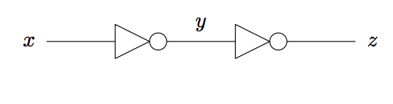
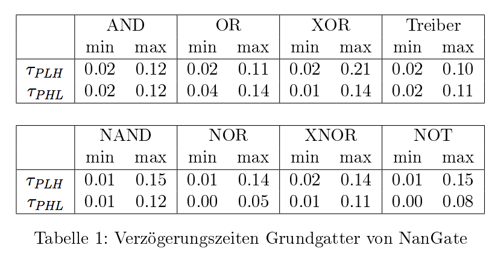
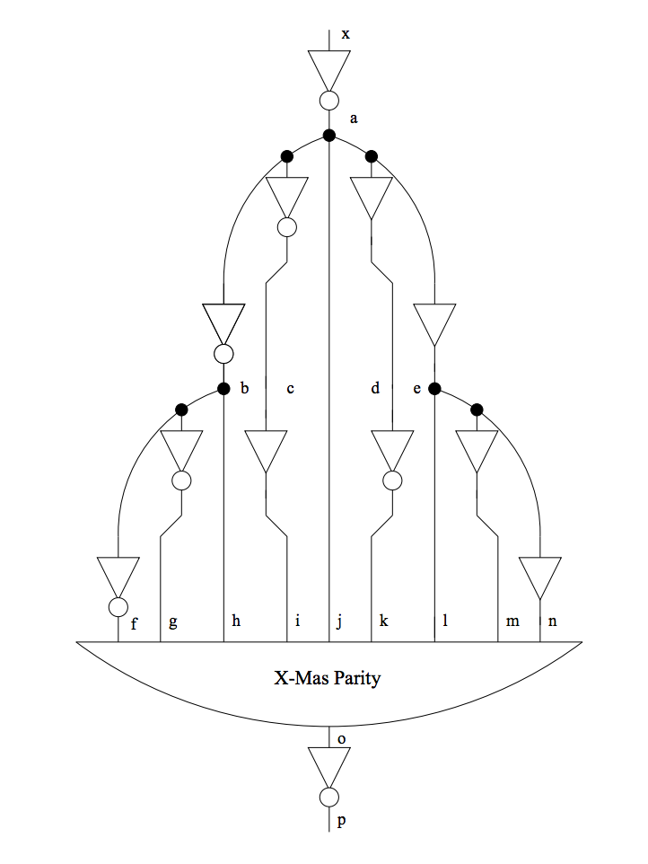
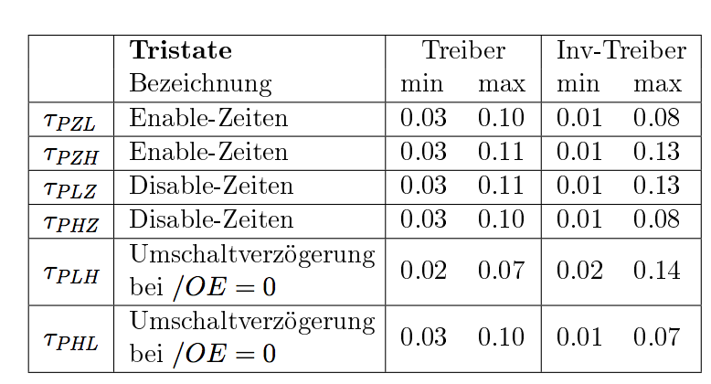
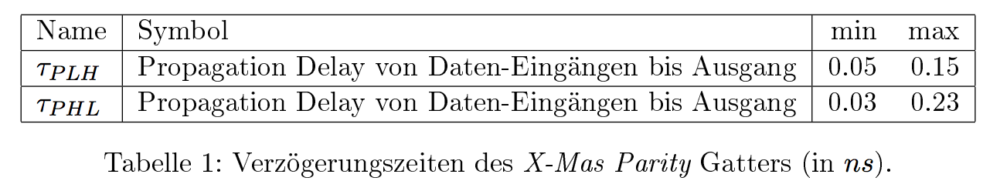
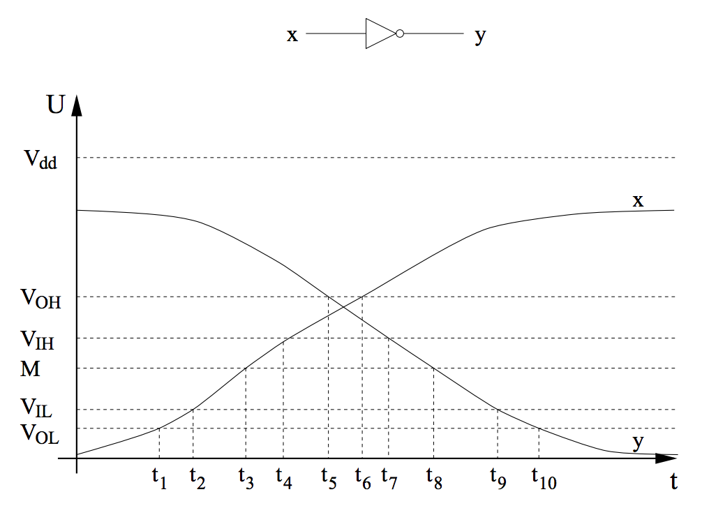
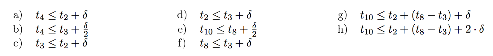
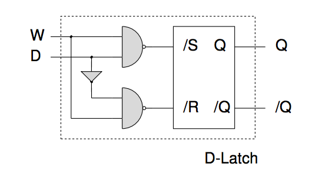
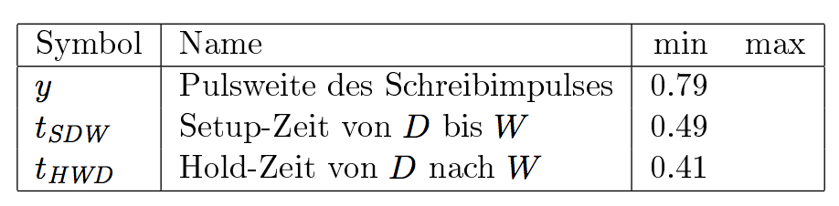

<!doctype html>
<html lang="en">
    <head>
        <meta charset="utf-8">
        <title>reveal-md</title>
        <link rel="stylesheet" href="css/reveal.css">
        <link rel="stylesheet" href="css/theme/black.css" id="theme">
        <!-- For syntax highlighting -->
        <link rel="stylesheet" href="lib/css/zenburn.css">

        <!-- If the query includes 'print-pdf', use the PDF print sheet -->
        <script>
          document.write( '<link rel="stylesheet" href="css/print/' + ( window.location.search.match( /print-pdf/gi ) ? 'pdf' : 'paper' ) + '.css" type="text/css" media="print">' );
        </script>
    </head>
    <body>

        <div class="reveal">
            <div class="slides"><section  data-markdown><script type="text/template"># Übungsblatt 9

<small>by Simon Selg, Danny Stoll</small>
</script></section><section  data-markdown><script type="text/template">
## Gliederung

- [Organisatorisches](/exc08.md#/2)
- [Blatt 8](/exc08.md#/3)
	- [Aufgabe 1](/exc08.md#/4)
	- [Aufgabe 2](/exc08.md#/5)
	- [Aufgabe 3](/exc08.md#/7)
	- [Aufgabe 4](/exc08.md#/8)
- [Blatt 10](/exc08.md#/9)

</script></section><section  data-markdown><script type="text/template">
### Anwesenheit
</script></section><section ><section data-markdown><script type="text/template">
## Testat
</script></section><section data-markdown><script type="text/template">
### Eckdaten

- 12.01.2017 nach TI-Vorlesung
- Klausurniveau
- 60 Minuten
</script></section><section data-markdown><script type="text/template">
### Inhalt

- Gesamter Stoff bis Weihnachtspause
- Pro Kapitel mind. 1 Aufgabe
- Beispiele folgend
</script></section><section data-markdown><script type="text/template">
### 2. Kodierung

- Huffman
- Kompl. Beweise
- RETI Kodierung
</script></section><section data-markdown><script type="text/template">
### 3. Kombinatorische Logik

- PLAs, Hypercubes
- McCluskey
- Primimplikanten Tafel
- CRA/CSA/Multiplizierer
- Boolsche Algebra Beweise
- Schaltkreise zeichnen und formalisieren
</script></section><section data-markdown><script type="text/template">
### 4. Seq. Logik

- Automaten
- Sequentielle Synthese
- RETI Datenpfade
</script></section><section data-markdown><script type="text/template">
### 5. Timing

- Timingdiagramme
- Spikefreie Schaltkreise
- RETI Datenpfade mit Timing
</script></section></section><section  data-markdown><script type="text/template">
## Blatt 9
</script></section><section ><section data-markdown><script type="text/template">
## Aufgabe 1


</script></section><section data-markdown><script type="text/template">
### a)



- x schaltet zum Zeitpunkt $t\_0$ bzg. $M$.
- y schaltet zum Zeitpunkt $t\_0 + (\text{min}\\{0.00,0.01\\}, \text{max}\\{0.08,0.15\\}) = t\_0 + (0.00,0.15)$ bzgl. $M$
- z schaltet zum Zeitpunkt $t\_0 + (0.00,0.15) + (0.00,0.15) = t\_0 + (0.00,0.30)$ bzgl. $M$
</script></section><section data-markdown><script type="text/template">
### b) - Fall 1: $x = 0 \rightarrow x = 1$


- x schaltet zum Zeitpunkt $t\_0$ bzg. $M$.
- y schaltet zum Zeitpunkt $t\_0 + t\_{PHL}^{\text{NOT}} = t\_0 + (0.00,0.08)$ bzgl. $M$
- z schaltet zum Zeitpunkt $t\_0 + (0.00,0.08) + t\_{PLH}^{\text{NOT}}$  bzgl. $M$
  - $t\_0 + (0.00,0.08) + (0.01,0.15) = t\_0 + (0.01, 0.23)$ bzgl. $M$
</script></section><section data-markdown><script type="text/template">
### b) - Fall 2: $x = 1 \rightarrow x = 0$


- x schaltet zum Zeitpunkt $t\_0$ bzg. $M$.
- y schaltet zum Zeitpunkt $t\_0 + t\_{PLH}^{\text{NOT}} = t\_0 + (0.01,0.15)$ bzgl. $M$
- z schaltet zum Zeitpunkt $t\_0 + (0.01,0.15) + t\_{PHL}^{\text{NOT}}$  bzgl. $M$
  - $t\_0 + (0.01,0.15) + (0.00,0.08) = t\_0 + (0.01, 0.23)$ bzgl. $M$
</script></section><section data-markdown><script type="text/template">
### b) - Unterschied beider Methoden

- Tutorat
</script></section></section><section  data-markdown><script type="text/template">
## Aufgabe 2

<div style="display: flex;align-items: center;justify-content: center;">
  
  <div style="margin-left: 10px; width: 45%;">
    
    
  </div>
</div>
</script></section><section  data-markdown><script type="text/template">
## Aufgabe 3



</script></section><section ><section data-markdown><script type="text/template">
## Aufgabe 4



</script></section><section data-markdown><script type="text/template">
### Aufgabe 4 - y

- Sei $W = 1$ von $t = 0$ bis $t = y$
- Wegen $t\_{PHL}$ des NAND ist entweder $/S$ oder $/R$ aktiv zwischen (0.01,0.12).
- Der Schreibimpuls am FF ist also min. von 0.12 ns bis y + 0.01 ns aktiv.
- Pulsweise eines RS-FF muss mindestens 0.68 ns sein
- Daher: $y - 0.12 + 0.01 \geq 0.08 \Leftrightarrow y \geq 0.79$ ns
</script></section><section data-markdown><script type="text/template">
### Aufgabe 4 - $t\_{SDW}$
- Sei $W = 1$ von $t = 0$ und voher W = 0$
- Sei D stabil zur Zeit $-t\_{SDW}$.
- Am oberen NAND kann nur ein Spike beim Übergang $(W,D) = (0,1) \rightarrow (1,0)$ auftreten. Um Spikefreiheit zu gewährleisten muss daher gelten: $t\_{SDW}^1 \geq 0.41 ns$.
- Am unteren NAND kann nur ein Spike beim Übergang $(W, \overline{D}) = (0,1) \rightarrow (1,0)$ auftreten. Um Spikefreiheit zu gewährleisten muss daher gelten: $t\_{SDW}^2 \geq 0.41 + 0.08 = 0.49 ns$.
- $\color{red}{  \Rightarrow } t\_{SDW} \geq max(t\_{SDW}^1, t\_{SDW}^2) = 0.49 ns$
</script></section><section data-markdown><script type="text/template">
### Aufgabe 4 - $t\_{HWD}$
- Nach Absenken von W muss D Spikefreiheit gewährleisten und somit hat $t\_{HWD} \geq 0.41 ns$.
</script></section></section><section ><section data-markdown><script type="text/template">
## Blatt 10
</script></section><section data-markdown><script type="text/template">
### Bonus Punkte
</script></section><section data-markdown><script type="text/template">
### Klausur Relevanz

1. $\quad 8/10$
2. $\quad 5/10$
3. $\quad 6/10$
4. $\quad 7/10$
</script></section></section><section  data-markdown><script type="text/template">
## Sonstiges
</script></section><section  data-markdown><script type="text/template">
## Quellen
</script></section></div>
        </div>

        <script src="lib/js/head.min.js"></script>
        <script src="js/reveal.js"></script>

        <script>
            function extend() {
              var target = {};
              for (var i = 0; i < arguments.length; i++) {
                var source = arguments[i];
                for (var key in source) {
                  if (source.hasOwnProperty(key)) {
                    target[key] = source[key];
                  }
                }
              }
              return target;
            }

            // Optional libraries used to extend on reveal.js
            var deps = [
              { src: 'lib/js/classList.js', condition: function() { return !document.body.classList; } },
              { src: 'plugin/markdown/marked.js', condition: function() { return !!document.querySelector('[data-markdown]'); } },
              { src: 'plugin/markdown/markdown.js', condition: function() { return !!document.querySelector('[data-markdown]'); } },
              { src: 'plugin/highlight/highlight.js', async: true, callback: function() { hljs.initHighlightingOnLoad(); } },
              { src: 'plugin/notes/notes.js', async: true, condition: function() { return !!document.body.classList; } },
              { src: 'plugin/math/math.js', async: true },
              { src: 'plugin/math/math.js', async: true }
            ];

            // default options to init reveal.js
            var defaultOptions = {
              controls: true,
              progress: true,
              history: true,
              center: true,
              transition: 'default',
              dependencies: deps,
              math: {
                mathjax: 'https://cdn.mathjax.org/mathjax/latest/MathJax.js',
                config: 'TeX-AMS_HTML-full'
              }
            };

            // options from URL query string
            var queryOptions = Reveal.getQueryHash() || {};

            var options = {};
            options = extend(defaultOptions, options, queryOptions);
            Reveal.initialize(options);
        </script>

          <script src="/scripts/ti-presentation-ws-2016"></script>
    </body>
</html>

